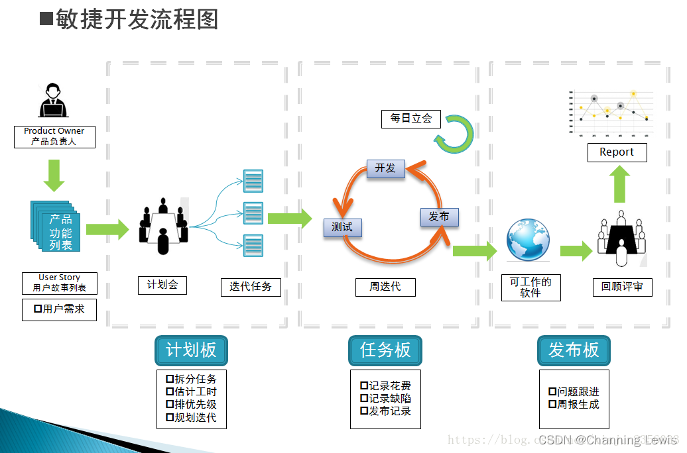
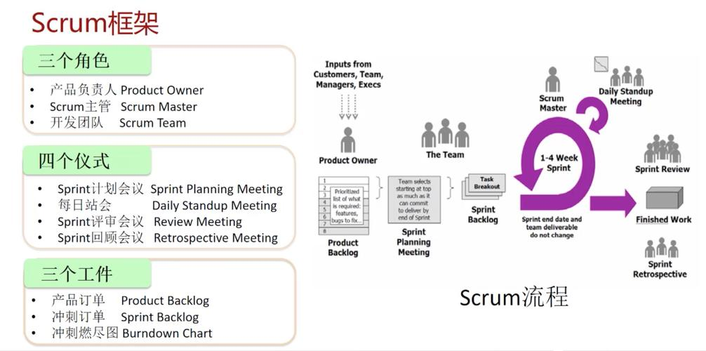

Day 2 学习软件测试的必备知识——（开发模型、开发流程、软件测试分类、阶段划分）
Day 2 学习软件测试的必备知识——（开发模型、测试模型、软件测试分类、阶段划分）
[TOC]
@[TOC]
软件开发模型
软件开发模型(Software Development Model)是指 …
Day 2 学习软件测试的必备知识——（开发模型、测试模型、软件测试分类、阶段划分）
[TOC]
@[TOC]
软件开发模型
软件开发模型(Software Development Model)是指软件开发全部过程、活动和任务的结构框架。软件开发包括需求、设计、编码和测试等阶段，有时也包括维护阶段。 软件开发模型能清晰、直观地表达软件开发全过程，明确规定了要完成的主要活动和任务，用来作为软件项目工作的基础。对于不同的软件系统，可以采用不同的开发方法、使用不同的程序设计语言以及各种不同技能的人员参与工作、运用不同的管理方法和手段等，以及允许采用不同的软件工具和不同的软件工程环境。

简单理解 软件开发过程模型就是软件开发人员在公司里工作的过程.
常见软件开发过程模型及讲解
- 瀑布模型
- 快速原型模型
- 增量模型
- 螺旋模型
- 迭代模型
- 敏捷开发模型
这里需要重点理解敏捷开发，也是相对于其他模块来时比较难理解的，但敏捷开发模型在中国很多中小型公司都在用，也是面试常会问到的。（至少要了解）
PS：很多培训机构和博文都会选择性略过敏捷开发，因此敏捷开发模型这一块很能拉开差距，万一面试官问到了，你不知道，可能面试官就会怀疑你的工作经历真实性
1. 瀑布模型
1970年温斯顿·罗伊斯（Winston Royce）提出了著名的“瀑布模型”，直到80年代早期，它一直是唯一被广泛采用的软件开发模型。
瀑布模型将软件生命周期划分为制定计划、需求分析、系统设计、程序编写、软件测试和运行维护等六个基本活动，并且规定了它们自上而下、相互衔接的固定次序，如同瀑布流水，逐级下落。
瀑布模型核心思想
在瀑布模型中，软件开发的各项活动严格按照线性方式进行，当前活动接受上一项活动的工作结果，实施完成所需的工作内容。当前活动的工作结果需要进行验证，如果验证通过，则该结果作为下一项活动的输入，继续进行下一项活动，否则返回修改。
瀑布模型的地位
瀑布模型是最早出现的软件开发模型, 在软件工程中占有重要的地位,它提供了软件开发的基本框架。
其他模型的基础，目前也有公司在用
优缺点
优点:
- 为项目提供了按阶段划分的检查点,软件开发的每个阶段都很清晰明了
- 当前阶段完成后,只要去关注后续阶段
- 可在迭代模型中每轮迭代很类似于一个小的瀑布模型
- 它提供了一个模版,这个模版使得分析、设计、编码、测试可以在改模版下有一个共同的指导
缺点:
- 各个阶段的划分完全固定，阶段之间产生大量的文档，极大地增加了工作量
- 由于开发模型是线性的，用户只有等到整个过程的末期才能见到开发成果，从而增加了开发风险
- 突出缺点是不适应用户需求的变化
- 软件的实际情况必须到项目开发的后期客户才能看到，这要求客户有足够的耐心
使用范围
-
用户的需求非常清楚全面，且在开发过程中没有或很少变化；
-
开发工作对用户参与的要求很低。
2. 快速原型模型

快速原型模型的第一步是建造一个快速原型，实现客户或未来的用户与系统的交互，用户或客户对原型进行评价，进一步细化待开发软件的需求。通过逐步调整原型使其满足客户的要求，开发人员可以确定客户的真正需求是什么；第二步则在第一步的基础上开发客户满意的软件产品。
核心思想
快速原型是利用原型辅助软件开发的一种新思想。经过简单快速分析，快速实现一个原型，用户与开发者在试用原型过程中加强通信与反馈，通过反复评价和改进原型，减少误解，弥补漏洞，适应变化，最终提高软件质量。
优缺点
优点:
克服瀑布模型的缺点,适应需求的变化,能够开发出更加让用户更加满意的需求
缺点:
- 所选用的开发技术和工具不一定符合主流的发展；
- 快速建立起来的系统结构加上连续的修改可能会导致产品质量低下。
- 使用这个模型的前提是要有一个展示性的产品原型，因此在一定程度上可能会限制开发人员的创新。
使用范围
- 不适合大型项目的研发
- 对所开发的领域比较熟悉而且有快速的原型开发工具
3. 增量模型
增量模型又称为渐增模型，是把待开发的软件系统模块化，将每个模块作为一个增量组件，从而分批次地分析、设计、编码和测试这些增量组件。运用增量模型的软件开发过程是递增式的过程。相对于瀑布模型而言，采用增量模型进行开发，开发人员不需要一次性地把整个软件产品提交给用户，而是可以分批次进行提交。
基本思想
增量模型在各个阶段并不交付一个可运行的完整产品，而是交付满足客户需求的一个子集的可运行产品。整个产品被分解成若干个构件，开发人员逐个构件地交付产品，这样做的好处是软件开发可以较好地适应变化，客户可以不断地看到所开发的软件，从而降低开发风险。
优缺点
优点
- 将待开发的软件系统模块化，可以分批次地提交软件产品，使用户可以及时了解软件项目的进展
- 以组件为单位进行开发降低了软件开发的风险。一个开发周期内的错误不会影响到整个软件系统。
- 开发顺序灵活。开发人员可以对组件的实现顺序进行优先级排序，先完成需求稳定的核心组件。当组件的优先级发生变化时，还能及时地对实现顺序进行调整。
缺点
- 要求待开发的软件能给进行增量式的开发,否则会很麻烦
- 在软件开发过程中需求变化是不可避免的,增量模型的灵活性可以使其适应这种变化的能力大大优于瀑布模型和快速原型模型，但也很容易退化为边做边改模型，从而是软件过程的控制失去整体性.
使用场景
- 进行已有产品升级或新版本开发
4. 螺旋模型
1988年，巴利·玻姆(Barry Boehm)正式发表了软件系统开发的“螺旋模型]”，它将瀑布模型和快速原型模型结合起来，强调了其他模型所忽视的风险分析，特别适合于大型复杂的系统。
如图所示，螺旋模型沿着螺线进行若干次迭代，图中的四个象限代表了以下活动：
（1） 制定计划：确定软件目标，选定实施方案，弄清项目开发的限制条件；
（2） 风险分析：分析评估所选方案，考虑如何识别和消除风险；
（3） 实施工程：实施软件开发和验证；
(4） 客户评估：评价开发工作，提出修正建议，制定下一步计划。
螺旋模型由风险驱动，强调可选方案和约束条件从而支持软件的重用，有助于将软件质量作为特殊目标融入产品开发之中。
优缺点
优点:
- 设计灵活可以在项目各个阶段进行变更
- 风险驱动,每个项目上线前都要进行风险分析
缺点:
- 螺旋模型强调风险分析,需要相当丰富的风险评估经验和专门知识,在风险较大的项目开发中，如果未能够及时标识风险，势必造成重大损失；
- 如果执行风险分析将大大影响项目的利润，那么进行风险分析毫无意义，
使用场景
适合使用大规模的软件项目
5.迭代模型
早在20世纪50年代末期，软件领域中就出现了迭代模型。最早的迭代过程可能被描述为“分段模型（stagewise model）”。迭代模型是RUP推荐的周期模型。被定义为：迭代包括产生产品发布（稳定、可执行的产品版本）的全部开发活动和要使用该发布必需的所有其他外围元素。在某种程度上，开发迭代是一次完整地经过所有工作流程的过程：需求分析、设计、实施和测试工作流程。实质上，它类似小型的瀑布式项目。RUP认为，所有的阶段都可以细分为迭代。每一次的迭代都会产生一个可以发布的产品，这个产品是最终产品的一个子集。
和瀑布模型一样属于老牌模型
与传统的瀑布模型相比较，迭代过程具有以下优点：
1）降低了在一个增量上的开支风险。如果开发人员重复某个迭代，那么损失只是这一个开发有误的迭代的花费。
2）降低了产品无法按照既定进度进入市场的风险。通过在开发早期就确定风险，可以尽早来解决而不至于在开发后期匆匆忙忙。
3）加快了整个开发工作的进度。因为开发人员清楚问题的焦点所在，他们的工作会更有效率。
4）由于用户的需求并不能在一开始就作出完全的界定，它们通常是在后续阶段中不断细化的。因此，迭代过程这种模式使适应需求的变化会更容易些。
6.敏捷开发模型
敏捷软件开发又称敏捷开发，是一种从1990年代开始逐渐引起广泛关注的一些新型软件开发方法，是一种应对快速变化的需求的一种软件开发能力。它们的具体名称、理念、过程、术语都不尽相同，相对于“非敏捷”，更强调程序员团队与业务专家之间的紧密协作、面对面的沟通（认为比书面的文档更有效）、频繁交付新的软件版本、紧凑而自我组织型的团队、能够很好地适应需求变化的代码编写和团队组织方法，也更注重软件开发中人的作用。
- 人和交互重于过程和工具。
- 可以工作的软件重于求全而完备的文档。
- 客户协作重于合同谈判。
- 随时应对变化重于循规蹈矩。
其中位于右边的内容虽然也有其价值，但是左边的内容最为重要。
人员彼此信任 人少但是精干 可以面对面的沟通
项目的敏捷开发：
敏捷开发小组主要的工作方式可以归纳为：作为一个整体工作； 按短迭代周期工作； 每次迭代交付一些成果；关注业务优先级； 检查与调整。最重要的因素恐怕是项目的规模。规模增长，面对面的沟通就愈加困难，因此敏捷方法更适用于较小的队伍，40、30、20、10人或者更少。大规模的敏捷软件开发尚处于积极研究的领域。
优缺点
优点：
1、用户很快可以看到一个基线架构版的产品
2、敏捷注重市场快速反应能力，与客户面对面的交流
3、随时可以接受更改
缺点：
1、注重人员的沟通，需要较好的团队协作
2、忽略文档的重要性，需要项目中存在经验较强的人
3、如果项目人员流动大太，会增加项目维护难度
适用项目范围：
适用于产品复杂，需求多变，难预测、实现周期长的产品
对比区别：
传统的瀑布式开发，也就是从需求到设计，从设计到编码，从编码到测试，从测试到提交大概这样的流程，要求每一个开发阶段都要做到最好。特别是前期阶段，设计的越完美，提交后的成本损失就越少。
快速原型开发，适合小项目先开发出一个小原型再逐步完善。
增量开发，是先完成一部的任务，再逐步增量完成全部。
迭代式开发，不要求每一个阶段的任务做的都是最完美的，而是明明知道还有很多不足的地方，却偏偏不去完善它，而是把主要功能先搭建起来为目的，以最短的时间，最少的损失先完成一个“不完美的成果物”直至提交。然后再通过客户或用户的反馈信息，在这个“不完美的成果物”上逐步进行完善。
螺旋开发，很大程度上是一种风险驱动的方法体系，因为在每个阶段之前及经常发生的循环之前，都必须首先进行风险评估。
敏捷开发，相比迭代式开发两者都强调在较短的开发周期提交软件，但是，敏捷开发的周期可能更短，并且更加强调队伍中的高度协作。敏捷方法有时候被误认为是无计划性和纪律性的方法，实际上更确切的说法是敏捷方法强调适应性而非预见性。适应性的方法集中在快速适应现实的变化。当项目的需求起了变化，团队应该迅速适应。这个团队可能很难确切描述未来将会如何变化。
敏捷开发scrum的实施

Scrum的英文意思是橄榄球运动的一个专业术语，表示“争球”的动作；把一个开发流程的名字取名为Scrum，相当于大家像打橄榄球一样迅速、富有战斗激情。而Scrum就是这样的一个开发流程。
Scrum开发流程中的三大角色
– 产品负责人（Product Owner）
主要负责确定产品的功能和达到要求的标准，指定软件的发布日期和交付的内容，同时有权力接受或拒绝开发团队的工作成果。
– 流程管理员（Scrum Master）
主要负责整个Scrum流程在项目中的顺利实施和进行，以及清除挡在客户和开发工作之间的沟通障碍，使得客户可以直接驱动开发。
–开发团队（Scrum Team）
主要负责软件产品在Scrum规定流程下进行开发工作，人数控制在5~10人左右，每个成员可能负责不同的技术方面，但要求每成员必须要有很强的自我管理能力，同时具有一定的表达能力；成员可以采用任何工作方式，只要能达到Sprint的目标。
scrum开发流程图



以上这些图都是讲敏捷开发模型的，或许有的小伙伴已经发现敏捷开发模型就是目前自己公司（或者部门、科室）正在实行的模型。
软件测试模型
软件测试和软件开发一样,都遵循软件工程原理,遵循管理学原理,所以理解好软件的开发模型会便于理解测试模型.
软件测试的一般流程:
我们发现一般的软件测试流程和软件开发的流程一样,但是这样的流程测试介入的较晚,对于前期重大的bug很难修复.所以测试的流程进行总结,总结出以下几个常用的测试模型:
- V模型
- W(双V)模型
- H模型
V模型

V模型和瀑布模型有一些共同的特性，V模型中的过程从左到右，描述了基本的开发 过程和测试行为。
单元测试：是模块测试，验证软件的基本组成单位的正确性，是白盒测试
集成测试：是模块间的测试，测试接口（软件各模块之间的接口和软件与硬件之间的接口）是否正确，是灰盒测试（白盒和黑盒结合)
系统测试：系统测试包括：冒烟测试 系统测试 回归测试
- 冒烟测试：主干流程测试，确认软件的基本功能正常，可以进行后续的测试工作
- 系统测试：是检测系统的功能、质量、性能能否满足系统的要求，包括功能、性能、界面、可靠性、兼容性等等，是黑盒测试
- 回归测试：修改了旧代码之后重新进行测试，确认修改后的代码没有引入新的错误或导致其他代码产生新的错误
验收测试：是确保软件的实现能否满足用户的需求或合同的要求
优缺点
优点:
- 每一个阶段都清晰明了、便于控制开发的每一个过程
- 既包含单元测试又饱含系统测试
缺点:
- 测试介入的较晚,对于前期的一些缺陷无从发现和修改
- 测试和开发串行
W模型
V模型的局限性在于没有明确地说明早期的测试,无法体现“尽早地和不断地进行软件测试” 的原则。在V模型中增加软件各开发阶段应同步进行的测试，演化为W 模型（如下图）。在模型中不难看出，开发是“V”，测试是与此并行的“V”。

W模型是V模型的发展，强调的是测试伴随着整个软件开发周期，而且测试的对象不仅仅是程序，需求、功能和设计同样要测试。测试与开发是同步进行的，从而有利于尽早地发现问题。
优缺点
优点
- 测试伴随软件的整个生命周期,例如,在需求分析结束后就可以进行需求分析测试、
- 测试于开发是并行独立进行
缺点
- 对需求和测试技术要求高
- 适用于大中型企业
H模型
H模型中, 软件测试过程活动完全独立,贯穿于整个产品的周期,与其他流程并发地进行,某个测试点准备就绪时,就可以从测试准备阶段进行到测试执行阶段。软件测试可以尽早的进行,并且可以根据被测物的不同而分层次进行。
优缺点
优点:
- 开发的H模型揭示了软件测试除测试执行外，还有很多工作；
- 软件测试完全独立，贯穿整个生命周期，且与其他流程并发进行；
- 软件测试活动可以尽早准备、尽早执行，具有很强的灵活性；
缺点:
- 管理型要求高：由于模型很灵活，必须要定义清晰的规则和管理制度，否则测试过程将非常难以管理和控制；
- 技能要求高：H模型要求能够很好的定义每个迭代的规模，不能太大也不能太小；
- 测试就绪点分析困难：测试很多时候，你并不知道测试准备到什么时候是合适的，就绪点在哪里，就绪点的标准是什么，这就对后续的测试执行的启动带来很大困难；
软件测试分类
1. 按照阶段进行划分
1.1 单元测试(Unit Testing)
单元测试是对软件组成单元进行测试。其目的是检验软件基本组成单位的正确性。测试的对象是软件设计的最小单位：模块。
- 测试阶段：编码后
- 测试对象：最小模块
- 测试人员：白盒测试工程师或开发工程师
- 测试依据：代码和注释+详细设计文档
- 测试方法：白盒测试
- 测试内容：模块接口测试、局部数据结构测试、路径测试、错误处理测试、边界测试
1.2 集成测试(Integration Testing)
集成测试也称联合测试、组装测试，将程序模块采用适当的集成策略组装起来，对系统的接口及集成后的功能进行正确性检测的测试工作。主要目的是检查软件单位之间的接口是否正确。
- 测试阶段：一般单元测试之后进行
- 测试对象：模块间的接口
- 测试人员：白盒测试工程师或开发工程师
- 测试依据：单元测试的模块+概要设计文档
- 测试方法：黑盒测试与白盒测试相结合
- 测试内容：模块之间数据传输、模块之间功能冲突、模块组装功能正确性、全局数据结构、单模块缺陷对系统的影响
补充说明： 单元测试是一个模块内部的测试，集成测试是在模块之间进行测试（至少两个）
1.3 系统测试(System Testing)
将软件系统看成是一个系统的测试。包括对功能、性能以及软件所运行的软硬件环境进行测试。时间大部分在系统测试执行阶段,包括回归测试和冒烟测试
- 测试阶段：集成测试通过之后
- 测试对象：整个系统（软、硬件）
- 测试人员：黑盒测试工程师
- 测试依据：需求规格说明文档
- 测试方法：黑盒测试
- 测试内容：功能、界面、可靠性、易用性、性能、兼容性、安全性等
补充说明：
（1）系统测试是从完整的角度，广面去看待问题，不再看模块
（2）虽然系统测试包括冒烟测试和回归测试，但三者之间是有严格的先后顺序的，即：先冒烟、再系统、后回归
2. 按是否覆盖源码划分
2.1 黑盒测试(Black-box Testing)
黑盒测试也称功能测试，测试中把被测的软件当成一个黑盒子，不关心盒子的内部结构是什么，只关心软件的输入数据与输出数据。黑盒测试又分为功能测试和性能测试
- 功能测试
- 业务测试是指：测试人员将系统的整个模块串接起来运行、模拟真实用户实际的工作流程。满足用户需求定义的功能来进行测试的过程
- 易用性（Useability）是交互的适应性、功能性和有效性的集中体现。又叫用户体验测试。
- 界面测试（简称UI测试)，测试用户界面的功能模块的布局是否合理、整体风格是否一致、各个控件的放置位置是否符合客户使用习惯，此外还要测试界面操作便捷性、导航简单易懂性，页面元素的可用性，界面中文字是否正确，命名是否统一，页面是否美观，文字、图片组合是否完美等。
- 安装测试:是指测试程序的安装、卸载。最典型的就是APP的安装、卸载。
-
兼容性测试:主要是指软件之间能否很好的运作，会不会有影响、软件和硬件之间能否发挥很好的效率工作，会不会影响导致系统的崩溃。例如最常见的是浏览器的兼容性测试,不同浏览器在css、js解析的不同会造成页面的不同.
-
性能测试
检查系统是否满足需求规格说明书中规定的性能。 通常表现在以下几个方面：
- 对资源利用（如内存、处理机周期等）进行的精确度量
- 对执行间隔
- 日志事件（如中断，报错）
- 响应时间
- 吞吐量（TPS）
- 辅助存储区（例如缓冲区、工作区的大小等）
- 处理精度等进行的监测
2.2 白盒测试(White-box Testing)
白盒测试又称结构测试、透明盒测试、逻辑驱动测试或基于代码的测试。白盒指的打开盒子，去研究里面的源代码和程序结果。
白盒测试也是接口测试的一种
2.3 灰盒测试(Gray-Box Testing)
灰盒测试，是介于白盒测试与黑盒测试之间的一种测试，灰盒测试多用于集成测试阶段，不仅关注输出、输入的正确性，同时也关注程序内部的情况。
灰盒测试:功能 + 接口
3.按是否执行程序划分
3.1 静态测试(Static testing)
静态方法是指不运行被测程序本身，仅通过分析或检查源程序的语法、结构、过程、接口等来检查程序的正确性。对需求规格说明书、软件设计说明书、源程序做结构分析、流程图分析、符号执行来找错。阿旺分析如下
- 检查项：代码风格和规则审核；程序设计和结构的审核；业务逻辑的审核；走查、审查与技术复审手册。
- 静态质量：度量所依据的标准是ISO9126。在该标准中，软件的质量用以下几个方面来衡量，即功能性(Functionality)、可靠性(Reliability)、可用性(Usability)、有效性(Efficiency)、可维护性（Maintainability）、可移植性(Portability)。
静态测试:代码静态分析和文档测试都属于静态测试
3.2 动态测试(Dynamic testing)
动态测试方法是指通过运行被测程序，检查运行结果与预期结果的差异，并分析运行效率、正确性和健壮性等性能。这种方法由三部分组成：构造测试用例、执行程序、分析程序的输出结果。
(1）动态测试有三部分组成：构造测试用例、执行程序、分析程序的输出结果。
(2）大多数软件测试都属于动态测试。
4. 按是否自动化分
4.1 手工测试(Manual testing)
手工测试就是由人去一个一个的输入用例，然后观察结果，和机器测试相对应，属于比较原始但是必须的一个步骤。阿旺总结优缺点：
- 优点：自动化无法替代探索性测试、发散思维类无既定结果的测试。
- 缺点：执行效率慢，量大易错。
4.2 自动化测试(Automation Testing)
就是在预设条件下运行系统或应用程序，评估运行结果，预先条件应包括正常条件和异常条件。简单说自动化测试是把以人为驱动的测试行为转化为机器执行的一种过程。
- 自动化测试有：测试自动化、性能测试自动化、安全测试自动化。（一般情况下，我们说的自动化是指功能测试的自动化）
- 自动化测试按照测试对象来分，还可以分为接口测试、UI测试等。接口测试的ROI（产出投入比）要比UI测试高。
自动化实施的步骤:
(1) 完成功能测试，版本基本稳定
(2) 根据项目特性，选择适合项目的自动化工具，并搭建环境
(3) 提取手工测试的测试用例转换为自动化测试的用例
(4) 通过工具、代码实现自动化的构造输入、自动检测输出结果是否符合预期
(5) 生成自动测试报告
(6) 持续改进、脚本优化
5.其他
5.1 冒烟测试(Smoke Testing)
该术语来自硬件，指对一个硬件或一组硬件进行更改或修复后，直接给设备加电。如果没有冒烟，则该组件就通过了测试，也可以理解为该种测试耗时短，仅用一袋烟的功夫就足够了。
冒烟测试的目的是确认软件基本功能正常，可以进行后续正式的测试工作。冒烟测试的执行者是版本编译人。 冒烟测试一般在开发人员开发完毕后送给测试人员来进行测试时，测试人员会先进行冒烟测试，保证基本功能正常，不阻碍后续测试。
5.2 回归测试
回归测试是指修改了旧的代码之后，重新进行测试以确认修改没有引入新的错误或导致其他代码产生错误。自动回归测试将大幅度降低系统测试、维护升级等阶段的成本.
在整个软件测试过程中占有很大的工作比重，软件开发的各个阶段都会进行多次回归测试。随着系统的庞大，回归测试的成本越来越大，通过正确的回归测试策略来改进回归测试的效率和有效性是很有意义的。
5.3 随机测试
随机测试主要是根据测试者的经验对软件进行功能和性能抽查。
根据测试说明书执行用例测试的重要补充手段，是保证测试覆盖完整性的有效方式和过程。
随机测试主要是对被测软件的一些重要功能进行复测，也包括测试那些当前的测试用例(TestCase)没有覆盖到的部分。
5.4 验收测试
验收测试是部署软件之前的最后一个测试操作, 也称为交付测试.验收测试的目的是确保软件准备就绪，按照项目合同、任务书、双方约定的验收依据文档，向软件购买都展示该软件系统满足原始需求。
- 测试阶段：系统测试通过之后
- 测试对象：整个系统（包括软硬件）。
- 测试人员：主要是最终用户或者需求方。
- 测试依据：用户需求、验收标准
- 测试方法：黑盒测试
- 测试内容：同系统测试(功能...各类文档等)
验收测试按照实施的组织不同分为:α测试和β测试
α测试
- α测试是由一个用户在开发环境下进行的测试，也可以是公司内部的用户在模拟实际操作环境下进行的测试。
- α测试的目的是评价软件产品的FLURPS(即功能、局域化、可使用性、可靠性、性能和支持)。
- 大型通用软件，在正式发布前，通常需要执行Alpha和Beta测试。α测试不能由程序员或测试员完成。
β测试
- Beta测试是一种验收测试。Beta测试由软件的最终用户们在一个或多个客房场所进行。
α测试与β测试的区别：
- 测试的场所不同：Alpha测试是指把用户请到开发方的场所来测试,beta测试是指在一个或多个用户的场所进行的测试。
- Alpha测试的环境是受开发方控制的,用户的数量相对比较少,时间比较集中。beta测试的环境是不受开发方控制的,用户数量相对比较多,时间不集中。
- alpha测试先于beta测试执行。通用的软件产品需要较大规模的beta测试,测试周期比较长。
总结：
1、常见软件开发过程模型：
- 瀑布模型
- 快速原型模型
- 增量模型
- 螺旋模型
- 迭代模型
- 敏捷开发模型
2、常见软件测试过程模型：
在实际工作中应灵活的运用各种模型的优点：
V模型: 强调了在整个软件项目开发中需要经历的若干个测试级别，并与每一个开发级别对应；忽略了测试的对象不应该仅仅包括程序，没有明确指出对需求、设计的测试
W模型: 补充了V模型中忽略的内容，强调了测试计划等工作的先行和对系统需求和系统设计的测试；与V模型相同，没有对软件测试的流程进行说明
H模型: 强调测试是独立的，只要测试准备完成，就可以执行测试
3、软件测试分类
这些面试都可能会问到哦！
在实际工作中与其他同事和部门对接的时候这些专业术语也是常讲到的，希望大家有空就多记一下！
（功能测试、性能测试、移动端测试等后期会详细出“1DAY“进行讲解，另外有没讲到的也希望能在评论区提醒作者补上~）